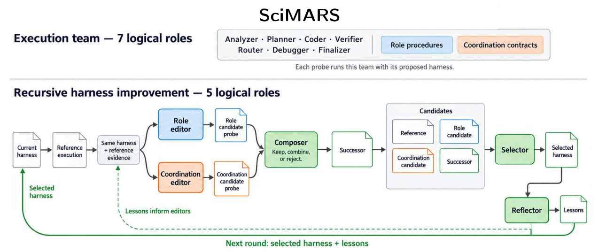
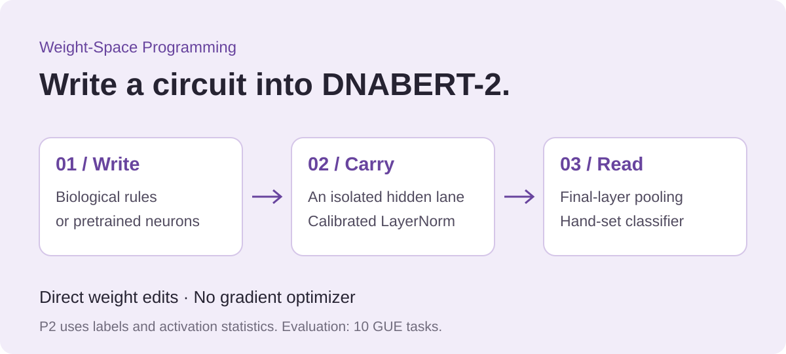
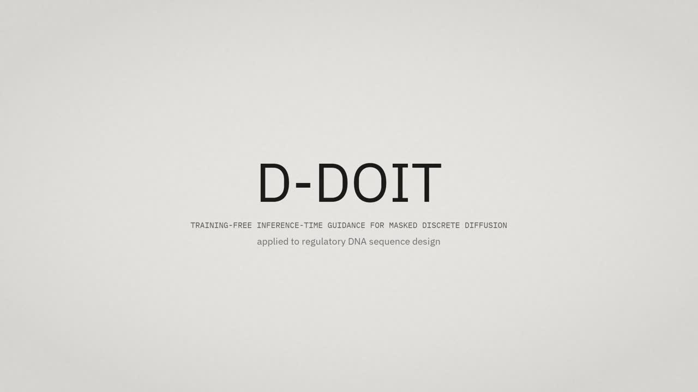

November 4, 2026 · SciMARS
SciMARS: Can a scientific agent team improve how it works?
Separate role repairs from coordination repairs, test them against execution evidence, and adapt the team within a scientific task.
Read the story →What we are building, what the experiments show, and the questions that come next.

Separate role repairs from coordination repairs, test them against execution evidence, and adapt the team within a scientific task.
Read the story →
Can an LLM program a genomic model without gradient descent? Direct weight edits, working circuits, and lessons from 10 GUE tasks.
Read the story & watch the video →
How black-box rewards steer discrete diffusion toward useful DNA and protein sequences, without retraining. Includes our 68-second research film.
Read the story & watch the film →